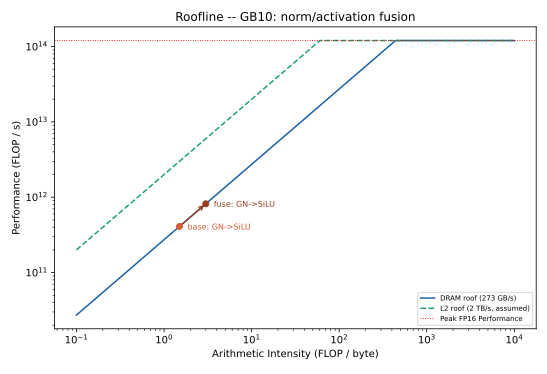

Project: cuTile for Local Diffusion
For the last three weeks of the machine-learning-accelerators course, we ought to select a personal project. We have decided to optimize the denoising loop of a local text-to-image diffusion model.
As our model of choice we have selected the SD-Turbo text-to-image model.
The architecture of SD-Turbo is a U-Net.
Each denoising step runs the whole U-Net, which, for the SD-Turbo is built from 22 ResnetBlocks (and 16 transformer blocks).
For our selected model, the operations within such a block are:
GroupNorm,
SiLU,
Conv2d, and
Linear.
Further, on the transformer side there are:
LayerNorm,
GELU / GEGLU FFN, and
the attention mechanism.
Looking at these operations it becomes clear that there are a lot of memory transfers happening. Therefore, we plan to decrease the text-to-image time by fusing together several of these operations. That means we are optimizing the diffusion model in regards to memory bandwidth.
Milestones
To follow a clear plan for these three weeks we came up with five milestones.
Inspect SD-Turbo model in regards to memory requirements and realization on the DGX Spark GPU (Roofline model).
Reason about fusing candidates (layers) and tiling approaches.
Implement fusion kernel for two candidates (+ verify correctness via
torch.allcloseper block and benchmark).Include the optimized kernel into the SD-Turbo model (+ verify end-to-end image equivalence).
Optimize the first candidate.
Repeat for the next candidate (Step 2).
Create CLI, Gradio UI to use the optimized model on the DGX Spark.
In regards to benchmarking we plan to:
compare against
torch.compile,prove the approach with Nsight (bytes moved per step at each memory tier)
keep track on the gain of each of our fusing approaches, and
compare different tiling sizes and approaches.
Milestone 0: SD-Turbo Model
Additional requirements that are needed to generate images with the SD-Turbo model.
pip install diffusers
pip install transformers
# Silence warnings
pip install accelerate
pip install torchvision
Milestone 1: Candidates + Tiling
After installing the required libraries, we then inspected a resnet and a transformer block of the model.
Resnet Block
ResnetBlock2D(
(norm1): GroupNorm(32, 320, eps=1e-05, affine=True)
(conv1): Conv2d(320, 320, kernel_size=(3, 3), stride=(1, 1), padding=(1, 1))
(time_emb_proj): Linear(in_features=1280, out_features=320, bias=True)
(norm2): GroupNorm(32, 320, eps=1e-05, affine=True)
(dropout): Dropout(p=0.0, inplace=False)
(conv2): Conv2d(320, 320, kernel_size=(3, 3), stride=(1, 1), padding=(1, 1))
(nonlinearity): SiLU()
)
Based on this resnet-block it is clear that each operation (norm, SiLU) reads and writes \(2 \cdot 320 \cdot 64 \cdot 64 = 2.5MiB\).
Therefore, the clear candidates for a fusion are norm1 + SiLU and norm2 + SiLU.
To achieve the highest performance for the resnet block, it is also possible to additionally fuse the denoising (temb) and the residual tail.

The roofline model shows that the norm / activation operations are memory-bound, so fusing norm + SiLU makes sense.
Transformer Block
Transformer2DModel(
(norm): GroupNorm(32, 320, eps=1e-06, affine=True, bias=True)
(proj_in): Linear(in_features=320, out_features=320, bias=True)
(transformer_blocks): ModuleList(
(0): BasicTransformerBlock(
(norm1): LayerNorm((320,), eps=1e-05, elementwise_affine=True, bias=True)
(attn1): Attention(
(to_q): Linear(in_features=320, out_features=320, bias=False)
(to_k): Linear(in_features=320, out_features=320, bias=False)
(to_v): Linear(in_features=320, out_features=320, bias=False)
(to_out): ModuleList(
(0): Linear(in_features=320, out_features=320, bias=True)
(1): Dropout(p=0.0, inplace=False)
)
)
(norm2): LayerNorm((320,), eps=1e-05, elementwise_affine=True, bias=True)
(attn2): Attention(
(to_q): Linear(in_features=320, out_features=320, bias=False)
(to_k): Linear(in_features=1024, out_features=320, bias=False)
(to_v): Linear(in_features=1024, out_features=320, bias=False)
(to_out): ModuleList(
(0): Linear(in_features=320, out_features=320, bias=True)
(1): Dropout(p=0.0, inplace=False)
)
)
(norm3): LayerNorm((320,), eps=1e-05, elementwise_affine=True, bias=True)
(ff): FeedForward(
(net): ModuleList(
(0): GEGLU(
(proj): Linear(in_features=320, out_features=2560, bias=True)
)
(1): Dropout(p=0.0, inplace=False)
(2): Linear(in_features=1280, out_features=320, bias=True)
)
)
)
)
(proj_out): Linear(in_features=320, out_features=320, bias=True)
)
For the transformer block, the LayerNorm + GEGLU are worth fusing with the matrix multiplications.
LayerNorm -> mm1 (320, 2560) -> GEGLU -> mm2 (1280, 320)
By fusing these operations, we plan to remove the separated memory passes for LayerNorm + GEGLU.
Fusing
After performing some initial tests, we verified that torch.compile already fuses norm + SiLU into a single kernel.
Therefore, this kernel serves as a warm-up kernel.
On the other hand, the Layernorm and GEGLU are executed as two separate kernels.
Therefore, fusing them with the matmul provides higher value compared to the torch.compile reference.
Tiling
For the optimal tiling approach we have several constraints that have to be met, either from cuTile or the GPU.
From the cuTile side of things, we have to consider that the tile dimensions must be powers of two.
The Nvidia Spark GPU has 24 MiB of L2 cache and 48 SMs.
The per-block activation (2.5 MiB) fits comfortably in L2, so at batch 1 it stays cache-resident.
For the norm + SiLU fusion we are looking at 32 groups and 320 channels.
Therefore, we can use 10 channels per group and thereby, have \(10 \times 64 \times 64 = 40,960\) elements.
For the fusion of the matmul with the LayerNorm + GEGLU, we keep the contraction pattern of the two linear layers with (320 -> 2560, 1280 -> 320).
We are going to fuse the LayerNorm as a first touch and then apply the GELU as a last touch for the first matmul.
Milestone 2: Fused GroupNorm + SiLU Kernel
GroupNorm Shape Coverage
A forward-pass survey of all 44 GroupNorm calls across the U-Net’s ResnetBlock2D blocks reveals 14 distinct (channels, H, W, groups) shapes, of which the fused cuTile kernel currently serves only the (320, 64, 64, 32) case (16 % of calls).
Because the kernel is already shape-parametric – the channel count is only a loop bound and every spatial extent is a power of two – all 44 calls are kernel-eligible, so full coverage requires merely relaxing the GnSiluFused._is_supported gate rather than writing new kernels.
chan H W grps Cg count now eligible
----------------------------------------------------
1280 8 8 32 40 11 YES
320 64 64 32 10 7 YES YES
640 32 32 32 20 6 YES
1280 16 16 32 40 6 YES
2560 8 8 32 80 3 YES
640 64 64 32 20 2 YES
2560 16 16 32 80 2 YES
320 32 32 32 10 1 YES
640 16 16 32 20 1 YES
960 32 32 32 30 1 YES
960 64 64 32 30 1 YES
1280 32 32 32 40 1 YES
1920 16 16 32 60 1 YES
1920 32 32 32 60 1 YES
----------------------------------------------------
total GN calls: 44 fused now: 7 (16%) kernel-eligible: 44 (100%)
distinct shapes: 14
After we applied the arbitrary shapes, we are now fusing everything:
chan H W grps Cg count fusable
--------------------------------------------
1280 8 8 32 40 11 YES
320 64 64 32 10 7 YES
640 32 32 32 20 6 YES
1280 16 16 32 40 6 YES
2560 8 8 32 80 3 YES
640 64 64 32 20 2 YES
2560 16 16 32 80 2 YES
320 32 32 32 10 1 YES
640 16 16 32 20 1 YES
960 32 32 32 30 1 YES
960 64 64 32 30 1 YES
1280 32 32 32 40 1 YES
1920 16 16 32 60 1 YES
1920 32 32 32 60 1 YES
--------------------------------------------
total GN calls: 44 fusable: 44 (100%)
distinct shapes: 14
Kernel Benchmark and Profiling
We compared the fused cuTile GroupNorm + SiLU against the eager PyTorch reference and
torch.compile on a single (1, 320, 64, 64) block, and profiled every kernel with
Nsight Compute (ncu).
Variant |
Kernels |
Total (us) |
Memory throughput |
|---|---|---|---|
eager (reference) |
4 |
~104 |
2 - 19 % |
|
3 |
~41 |
0.5 - 16 % |
fused (cuTile) |
2 |
~39 |
6 - 14 % |
At the kernel level the cuTile fusion matches torch.compile (two kernels vs three) and both
plateau at a low memory throughput: a single batch-1 GroupNorm is too small to saturate the
48 SMs, so the kernels are latency-bound, not bandwidth-bound. The larger speed-up seen in the
Python micro-benchmark is dominated by torch.compile’s per-call dispatch overhead rather than
kernel efficiency. End-to-end, torch.compile additionally optimizes the whole U-Net graph
(CUDA graphs, cross-kernel scheduling), which a per-block kernel replacement does not – so the
end-to-end difference reflects graph-level optimization, not the quality of the
GroupNorm + SiLU kernel.
Occupancy is not the bottleneck
The statistics kernel launches only N x groups = 32 blocks, so we suspected it underfilled the
48 SMs and wrote a split-reduction variant: per-channel partial sums (N x channels = 320 blocks)
recombined in the apply pass. Profiling disproved the hypothesis. Raising the block count 32 -> 320
left the memory throughput unchanged (6.73 % -> 6.70 %) and the achieved occupancy nearly flat
(9.3 % -> 11.5 %); the split apply pass even ran slower (19.2 -> 23.4 us) because rebuilding the
group statistics per block adds dependent scalar loads. The decisive evidence comes from
torch.compile: its apply kernel runs at 94.9 % occupancy and still reaches only 15.7 % memory
throughput. The ceiling is therefore the problem size – a single batch-1 GroupNorm (2.5 MiB,
~19 us) cannot supply enough parallel work to saturate the GPU – not the launch occupancy. The
simple two-pass kernel remains the fastest variant; the split kernel is kept as a documented negative
result. Further speed-ups must come from graph-level optimization (CUDA graphs) or larger batches,
not from tuning this kernel. Sweeping the batch size confirms this is scale-independent: the
split-reduction kernel stays within ~2 % of the two-pass kernel from B = 1 to B = 128
(split / two-pass = 0.98 - 1.01), so raising occupancy is neutral across the whole L2-to-DRAM
range, not only at batch 1.
Batch scaling: the L2 boundary
Sweeping the batch size makes the memory hierarchy directly visible. Each image needs
x + out = 2 x 2.5 MiB = 5 MiB of working set, so the set crosses the 24 MiB L2 cache
between B = 4 (20 MiB, fits) and B = 8 (40 MiB, spills to DRAM):
Batch |
us / call |
us / image |
Regime |
|---|---|---|---|
1 |
17.7 |
17.7 |
L2-resident |
2 |
24.2 |
12.1 |
L2-resident |
4 |
59.1 |
14.8 |
L2-resident (near limit) |
8 |
238.7 |
29.8 |
spills to DRAM |
16 |
536.0 |
33.5 |
DRAM-bound |
32 |
1046.0 |
32.7 |
DRAM-bound |
64 |
2092.5 |
32.7 |
DRAM-bound |
While the working set is L2-resident the per-image latency stays ~12 - 18 us (latency-bound); once it
spills, it plateaus at ~32.7 us/image. That plateau is exactly the DRAM-bandwidth cost of the two-pass
kernel, which moves x twice plus out once: \(3 \times 2.5\,\text{MiB} / 240\,\text{GB/s} \approx 32.8\,\mu s\).
This confirms the roofline premise from Milestone 1: at batch 1 the activation is L2-resident (so the
fusion win is L2 traffic and launch overhead), and only at larger batch / resolution does it spill to
DRAM, where reducing the number of passes would yield the larger, bandwidth-bound win.
cuTile vs. torch.compile across batch sizes
Comparing the fused cuTile kernel against torch.compile on random inputs across batch sizes
separates the two regimes cleanly:
Batch |
Working set |
|
cuTile |
cuTile vs compile |
|---|---|---|---|---|
1 |
5 MiB (L2) |
29.8 |
15.7 |
1.90x |
8 |
40 MiB (DRAM) |
225.1 |
260.4 |
0.86x |
32 |
160 MiB (DRAM) |
1006.1 |
1075.8 |
0.94x |
64 |
320 MiB (DRAM) |
1996.0 |
2044.2 |
0.98x |
128 |
640 MiB (DRAM) |
3995.4 |
4067.1 |
0.98x |
At batch 1 cuTile is 1.90x faster, but this is a launch-overhead win: cuTile issues two kernels via a
light launch path, whereas default-mode torch.compile issues three with Python dispatch guards. Once
the working set spills to DRAM both kernels become bandwidth-bound – they move the same bytes against the
same ~240 GB/s roof – so the ratio converges toward a tie (0.86 -> 0.98), the two implementations landing
within a few percent of each other. The conclusion: for this memory-bound operation the cuTile kernel matches a
heavily tuned production compiler to within ~10 %; its only clear advantage is launch overhead at batch 1,
which torch.compile(mode="reduce-overhead") (CUDA graphs) would also remove. This closes the
GroupNorm + SiLU candidate: there is no kernel-level headroom left, so the remaining gains must come
from graph-level launch amortization (CUDA graphs) and from the compute-bound transformer FFN candidate.
Real-shape coverage and a profitability gate
Extending the batch-1 comparison to all 14 real U-Net GroupNorm shapes confirms the launch-overhead
picture: default-mode torch.compile sits at a ~27 us dispatch floor regardless of shape, so the
fused kernel – whose latency tracks the actual work – beats it on 11 of 14 shapes (1.1 - 2.9x). But it
loses to plain eager on 5 high-channel, tiny-spatial shapes (C >= 1280, H <= 16), where too few
elements per group leave the two-pass kernel underutilized. A _PROFITABLE_GN_SHAPES gate (mirroring
the FFN one) therefore fuses only the 9 beat-eager shapes and defers the rest, making the ResNet patch a
non-regression vs eager. Two honest caveats: these batch-1 wins are the launch-overhead advantage that
mode="reduce-overhead" (CUDA graphs) would remove – not kernel-efficiency gains – and the gate’s
whole-model effect is within noise (GroupNorm is a small fraction of the step), so its justification is
per-shape correctness, not an end-to-end number.
Milestone 5: Fused LayerNorm + GEGLU FFN
The second candidate is the transformer feed-forward block
LayerNorm -> mm1 (dim -> 8*dim) -> GEGLU -> mm2 (4*dim -> dim). A shape survey over the 16
transformer blocks finds four distinct (tokens, dim) shapes: 4096x320, 1024x640,
256x1280 and 64x1280. Unlike GroupNorm + SiLU this candidate is compute-bound
(~150 GFLOP per denoising step across the FFNs), so the goal is to hide the LayerNorm and GEGLU
memory passes inside the matmuls rather than to save bandwidth on an elementwise chain.
Fusion headroom (GPU-verified)
Compiling the block with torch.compile on the Spark and inspecting the generated Triton code
confirms the Milestone 1 hypothesis on GPU: Inductor emits LayerNorm and the GEGLU gate as
separate Triton kernels around two external cuBLAS matmuls.
triton_per_fused_native_layer_norm_0 # LayerNorm (own kernel)
extern_kernels.addmm( (4096,320) @ (320,2560) ) # mm1 (cuBLAS)
triton_poi_fused_gelu_mul_split_view_1 # GEGLU gate (own kernel)
extern_kernels.addmm( (4096,1280) @ (1280,320) ) # mm2 (cuBLAS)
Because the matmuls run in cuBLAS, Inductor cannot fold the norm or activation into them, so the
mm1 output (the proj) is materialized to DRAM and read back by the gate kernel. GEGLU projects to
twice the feed-forward inner dimension, so at the top shape the proj is [tokens, 2*inner] wide:
inner = 4 * dim = 4 * 320 = 1280 (feed-forward expansion, mult = 4)
proj shape = [tokens, 2 * inner] = [4096, 2560] (GEGLU -> 2 * inner)
proj bytes = 4096 * 2560 * 2 (fp16) = 20,971,520 bytes = 20 MiB
round-trip = write + read = 2 * 20 MiB = 40 MiB per FFN call
Folding the LayerNorm into mm1’s prologue and the GEGLU into its epilogue keeps the proj in
registers, avoiding that ~40 MiB round-trip entirely – headroom cuTile can capture and
torch.compile cannot.
Kernel and correctness
The fused kernel is two cuTile kernels: Kernel A (LayerNorm prologue -> mm1 -> GEGLU
epilogue) producing the gated [tokens, 4*dim] without ever materializing the 8*dim proj,
and Kernel B (mm2). Both use the ct.mma tile contraction with tile-unit load indexing.
The kernel matches the captured block output within an fp16 tolerance (GELU uses the tanh
approximation, since cuTile has no erf).
Result: fusion does not beat cuBLAS here
Benchmarked against the eager block and torch.compile:
tokens x dim |
eager |
|
cuTile |
cuTile vs compile |
|---|---|---|---|---|
4096 x 320 |
397 |
331 |
352 |
0.94x |
1024 x 640 |
235 |
181 |
429 |
0.42x |
256 x 1280 |
223 |
264 |
1072 |
0.25x |
The fused cuTile kernel is slower than torch.compile, and increasingly so at the smaller-token,
higher-dim shapes. The cause is matmul utilization: a tile-size sweep tops out at 31.7 TFLOPS
(tile 128x64x64), only ~32 % of the ~100 TFLOP/s FP16 tensor ceiling, whereas torch.compile
dispatches the matmuls to cuBLAS, which runs far closer to peak. On a compute-bound operation a
matmul that is ~3x slower than cuBLAS cannot be recovered by removing the memory passes, even though
those passes are real (at 4096 x 320, where the proj round-trip is comparable to the matmul time,
cuTile does reach a near-tie at 0.94x).
This is the intended contrast with Milestone 2 and confirms the Milestone 1 roofline reasoning:
Memory-bound (GroupNorm + SiLU): cuTile ties
torch.compile– fusion captures the win because there is no cuBLAS matmul to beat.Compute-bound (LayerNorm + GEGLU): cuTile loses – the matmul dominates and a hand-written tile GEMM does not reach cuBLAS-level utilization, so the fusion saving is given back.
The tile-throughput heatmaps (one per k_tile) show throughput rising with tile size up to a
sweet spot around 128 x 64 x 64 (31.7 TFLOPS at 4096 x 320), then collapsing for the
largest tiles – the signature of register spilling.
Profiling: occupancy-bound (NCU)
Nsight Compute pins the cause. Occupancy is the fraction of an SM’s maximum warps that are actually resident; the GPU hides memory latency by switching among resident warps, so when one warp stalls on a load another can run. High occupancy therefore requires many warps per SM, but each SM has a fixed register file that all its threads share – so a high register count per thread caps how many warps fit. Both fused kernels compile to 255 registers per thread (the hardware maximum), which pins occupancy at ~12 %:
register file per SM = 65,536 registers (256 KB)
registers per thread = 255 (the hardware maximum)
resident threads = 65,536 / 255 ~= 257 threads = 8 warps
occupancy = 8 / 64 max warps ~= 12.5 % (NCU measured: 11.9 %)
With only ~8 resident warps there is nothing to hide memory latency, so neither the compute (~19 - 24 %) nor the memory (~33 - 40 %) pipe approaches saturation: the kernels are occupancy-bound, not compute- or memory-bound. The register pressure is inherent to the design – the GEGLU keeps two live accumulators (hidden and gate) across the entire reduction, doubling a plain GEMM’s footprint – and cuTile exposes no register/shared-memory blocking control, so the kernel cannot reach the occupancy cuBLAS sustains via shared-memory staging and warp specialization. This is the concrete reason a hand-written tile GEMM does not match cuBLAS on the compute-bound path.
We tested the obvious fix – a register-reduced variant that splits the GEGLU into two
single-accumulator kernels (materializing the hidden half between them). It ran slower, not
faster (521 vs 351 us at 4096 x 320): splitting sacrifices the fused kernel’s reuse of the
normalized A operand (the LayerNorm and normalization are recomputed for both halves) and adds a
10 MiB buffer round-trip, which outweighs the occupancy gained. The fully-fused two-accumulator
kernel therefore remains the best cuTile variant – the register pressure is the price of A-operand
reuse and is worth paying. The ~32 % ceiling is intrinsic to a hand-written tile GEMM in cuTile and
is recovered by neither zero-padded larger tiles nor register-splitting.
An L2 block swizzle (grouping GROUP_M row-tiles so concurrent blocks reuse the weight columns
from L2) gave a modest, shape-dependent gain – largest (~15 %) at the weight-heavy 256 x 1280
shape where L2 pressure is highest, and negligible at 4096 x 320 where the weights are already
L2-resident. It brings 4096 x 320 to a near-tie with torch.compile (0.96x at a fixed 64x64x64
tile; 1.05x once the tile is tuned per shape – see below), but does not touch
the occupancy bound; reaching parity across all shapes would require shared-memory blocking, which
cuTile does not straightforwardly expose alongside the fused epilogue. Notably, 4096 x 320 – the
top-resolution shape where the fusion’s avoided proj round-trip is largest – is exactly where the
fused kernel is competitive, consistent with the memory-vs-compute-bound framing throughout.
Per-shape tile selection
A single fixed tile is not optimal, because the three FFN shapes have different aspect ratios. Re-running
the (tM, tN, tK) sweep and taking the best tile per shape shows a clear pattern and a large win on
the dominant shape:
Shape (tokens x dim) |
Fixed |
Best tile |
Best latency |
Speedup |
|---|---|---|---|---|
4096 x 320 |
777 us |
|
316 us |
2.46x |
1024 x 640 |
436 us |
|
392 us |
1.11x |
256 x 1280 |
918 us |
|
911 us |
~1.0x |
The pattern is that the best tile tracks the problem’s aspect ratio: the tall shape (4096 rows) prefers
a tall tile (tM = 128), which amortizes each loaded weight column over more rows; the wide
shapes (fewer rows, larger dim) prefer a wide tile (tN = 128). dim = 320 is not divisible
by 128, so tN cannot widen there – the sweep is forced onto tM and happens to land on the right
lever. The 4096 x 320 block is both the largest and the most frequent (the early transformer blocks),
so its 2.46x kernel speedup dominates the FFN’s total time.
Approach. Rather than hard-code one tile, the launchers auto-select via best_ffn_tile(dim, tokens,
inner) (in ffn_kernel.py): a per-dim lookup of the tuned tile, guarded by a divisibility check
(tM must divide the row count; tN must divide both inner and dim) that falls back to
64x64x64 for any shape not in the table, so a mismatched shape can never pick a padding-only tile.
Both the plain and swizzled launchers default to it, and an explicit tile still overrides for
benchmarking. The FusedFFN model patch uses the swizzled launcher (the fastest variant on the
two larger shapes – the plain kernel is ~2.4x slower at 1024 x 640).
Wiring this in and re-running bench_compare (each variant now at its tuned tile) confirms it end to
end, and shows the swizzle is the best cuTile variant on the two larger shapes:
Shape (tokens x dim) |
eager |
torch.compile |
fused |
swizzle |
split |
|---|---|---|---|---|---|
4096 x 320 |
399 |
330 |
351 (0.94x) |
314 (1.05x) |
684 (0.48x) |
1024 x 640 |
238 |
357 |
954 (0.37x) |
394 (0.91x) |
553 (0.65x) |
256 x 1280 |
230 |
263 |
1950 (0.13x) |
1332 (0.20x) |
1090 (0.24x) |
The headline is 4096 x 320: the tuned swizzle reaches 1.05x vs torch.compile – the first (and
only) cuTile variant to cross parity, on the top-resolution, most-frequent shape, exactly where the
avoided proj round-trip is largest. At 1024 x 640 the swizzle (0.91x) is the strongest variant but
still short of cuBLAS; at 256 x 1280 every variant loses badly (~0.2x), and there the single-accumulator
split marginally leads the cuTile field – the weight-heavy, few-token regime where occupancy hurts most.
This is a free win – a launch-parameter change, no kernel rewrite – but it does not overturn the
conclusion: even the tuned 31.9 TFLOPS is still only ~32 % of the FP16 tensor ceiling, so the
occupancy bound and the loss to cuBLAS on the compute-bound path stand across the shape mix. It narrows
the gap – to a genuine win at 4096 x 320 – but does not close it overall.
Profitability gate: only fuse where it wins
The table above also shows the fused kernel is worse than plain eager on the two larger shapes – at
1024 x 640 eager is 238 us vs the swizzle’s 394, and at 256 x 1280 eager (230) even beats
torch.compile (263). Running the kernel there is strictly self-harm. The FusedFFN patch therefore
gates on profitability, not just correctness: a _PROFITABLE_DIMS allow-list (currently
{320}) fuses only the shape that beats eager and falls back to the original LayerNorm + FeedForward
everywhere else. This makes the patch a strict non-regression vs eager – it wins the 4096 x 320
blocks and matches eager on the rest – rather than a kernel that helps one shape and hurts two.
This is the roofline thesis expressed as a dispatch rule: fuse where the shape leans memory-bound
(``dim = 320``, where the avoided proj round-trip pays for the slower GEMM), defer to cuBLAS/eager where
it is compute-bound. It is damage-avoidance, not a new win: the gate cannot make the hand kernel
competitive on the compute-bound shapes, so the end-to-end result still does not beat torch.compile
(which fuses the whole graph and captures it into CUDA graphs) – it only stops the fused path from
paying for a kernel that loses.
End-to-end: does fusion beat the baseline?
Patching each fused kernel into the full SD-Turbo U-Net and timing one generation gives the whole-model picture. Both patches were first verified to be image-equivalent to the baseline (the FFN’s tanh-GELU approximation gives a slightly larger but still visually identical difference).
Variant |
Median (ms) |
vs baseline |
vs torch.compile |
|---|---|---|---|
Baseline (eager) |
42.58 |
1.00x |
0.93x |
Fused ResNet (GN + SiLU) |
41.99 |
1.01x |
0.94x |
Fused FFN (LN + GEGLU) |
41.80 |
1.02x |
0.95x |
Fused Both |
41.86 |
1.02x |
0.95x |
|
39.62 |
1.07x |
1.00x |
With the profitability gates active (fuse GN only on the beat-eager shapes, FFN only on dim = 320),
every fused variant lands within ~1 - 2 % of the eager baseline – a statistical tie, i.e. a
non-regression. The gates are doing exactly their job: without them the fused FFN regresses to 0.89x
(adding ~5 ms by running the losing compute-bound shapes), and the gate removes precisely that.
The 1 - 2 % spread is within run-to-run noise, so the per-kernel wins measured in isolation (GN beating
torch.compile by 1.2 - 2x on the real batch-1 shapes; the FFN swizzle at 1.04x on 4096 x 320) do
not surface end to end. The reason is Amdahl: GroupNorm and the FFN are a small fraction of the ~42 ms
step – convolutions, attention, and the VAE dominate – so even a 2x kernel moves the whole-model number
by ~1 %, below the noise floor. End-to-end is the wrong instrument to resolve these kernels; the per-kernel
benchmarks are where their effect is visible and outside noise.
The decisive point is why, in isolation, GN can beat the baseline and the FFN cannot. The eager baseline is not naive: it already dispatches matmuls and convolutions to cuBLAS / cuDNN, and is only inefficient about the small memory-bound glue (norms, activations), which it runs as separate kernels.
GroupNorm + SiLU is memory-bound – the baseline runs it as ~4 scattered kernels with no cuBLAS involved, so fusing them into 2 kernels beats/ties the baseline.
The FFN is compute-bound – the baseline runs its matmuls on cuBLAS, so beating it requires replacing cuBLAS with our own matmul (~32 % of peak). Fusing away the memory passes cannot offset a matmul 2 - 4x slower, so on the compute-bound shapes the fused FFN is slower – which is why the gate defers them to eager rather than regressing.
In one sentence: fusion beats the eager baseline only where the baseline is inefficient (memory-bound
ops); for a compute-bound op the baseline already uses cuBLAS, so “beating the baseline” means “beating
cuBLAS”, which a hand-written tile kernel does not. The only robust end-to-end winner is
torch.compile (1.07x), which pairs cuBLAS/cuDNN with CUDA graphs (mode="reduce-overhead") to
remove the per-launch overhead the eager and patched pipelines still pay – a CUDA-graph capture of the
fused pipeline is the natural next step to close that gap.
Test Execution
export PYTHONPATH=src/diffusion:test/diffusion
python -m pytest test/diffusion/sd_turbo_fused/resnet/test_kernel_shapes.py -v